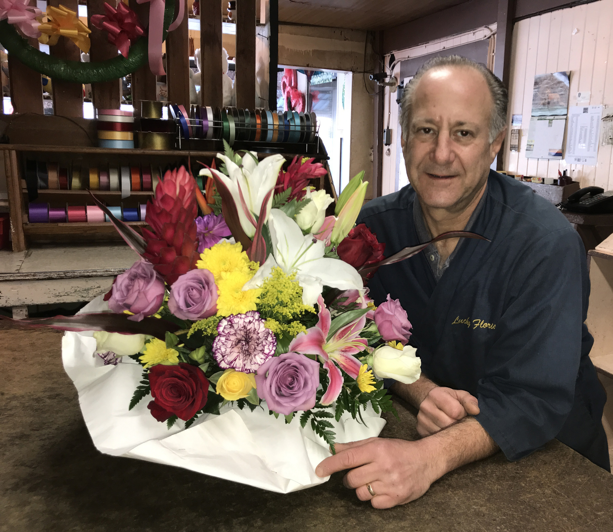
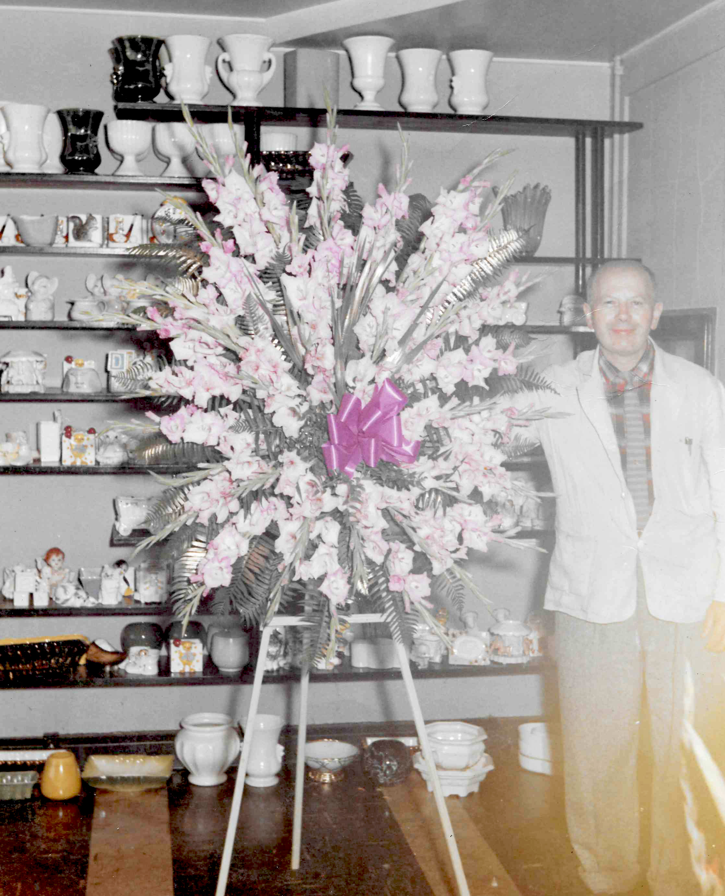

We're located in the heart of Oakland, at the intersection of West MacArthur Boulevard and Telegraph Avenue. Give us a call or stop on by!
Address: 501 W MacArthur Blvd, Oakland, CA 94609
Phone: (510) 653-3737
Hours: 8.30 am- 5.30pm Monday- Friday

Lucky Florist first opened its doors back in 1935. We are third generation flower shop, residing at the same address since day one. Our grandfather, Max Davis, his wife Eleanor, and her great uncle, Jack Capeluto, had a dream of starting their own business. We were still in the midst of the great depression and the name, Lucky Florist, was thought up by our grandmother. When I was young, she told us that she thought of the name when she realized how lucky we were to have a business at all during terrible economic times. They were now living the American dream. We couldn’t be more proud of them for all their sacrifices and hard work over the years.
In 1961, our father, Robert Davis, was just coming out of the military when he joined the family business. He, along with our grandfather and other fine employees, like my uncle Charlie, kept the business running at a high level of customer satisfaction which continues to this day. We have loyal customers dating back to the late 40s, remembering times when we did their first high school corsage, or even their wedding. We love hearing the old stories. It gives us a great sense of community and pride.
His grandson Jay keeps this old, family-owned traditional alive with beautiful flower arrangements for all occasions. Your satisfaction is our utmost priority.